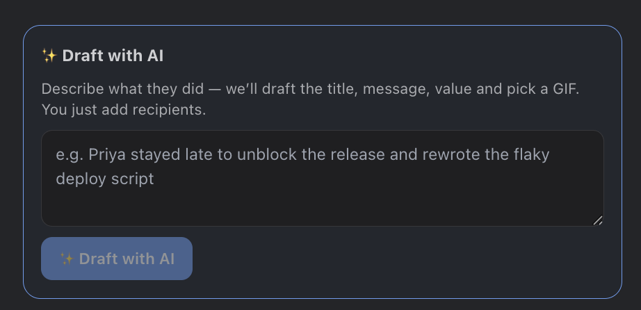
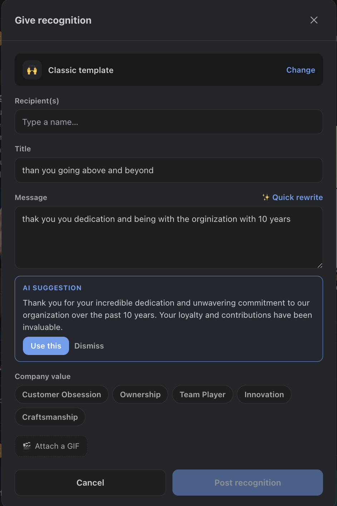
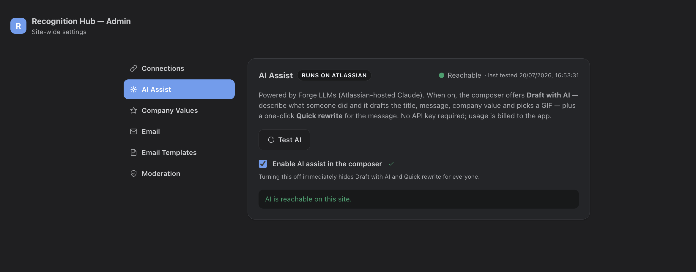

AI Assist adds two things to the composer: a Draft with AI starting point, and a one-click Quick rewrite for the message. It works as soon as the app is connected to Monday — there is no key to obtain and nothing to configure.
Which models answer
Two choices, under Settings > Integrations > AI assist:
- Monday AI (default) — runs on Monday’s own models through the connection you already have. Usage draws on your account’s Monday AI credits and appears in Monday’s usage dashboard. Nothing to set up.
- Your own Anthropic key — an admin pastes a key and usage is billed to your Anthropic account instead. Choose this if you would rather own the model relationship, or your Monday AI credits are spoken for.
The key field only appears when the Anthropic option is selected, and the choice can be changed at any time.
Running on Monday AI credits instead — with no key to manage — is coming through the Monday connection. Until then, an Anthropic key is how AI Assist is switched on.
Draft with AI
When AI Assist is on, Give recognition opens with a Draft with AI panel above the card templates (the button also picks up a ✨ sparkle). Describe what someone did in plain language and Recognition Hub drafts the whole card for you:
- Title — a short, punchy headline.
- Message — a warm note written in the second person.
- Company value — the best-matching value from your workspace, auto-selected (or none).
- GIF — a mood-appropriate GIF search runs automatically and the top result is pre-selected.
The draft lands on the compose step with everything filled in and the cursor parked on the recipient field — you just add the people and post. Nothing is submitted automatically, and every field stays fully editable. Press ⌘/Ctrl + Enter in the description box to draft without reaching for the mouse.

Quick rewrite
Already wrote a message but want it tighter or warmer? Click ✨ Quick rewrite next to the Message field. AI Assist returns a polished version — keeping your meaning and any names — as a suggestion you can preview, then Use this to drop it into the card or Dismiss to keep your original.

Admin controls
AI Assist sits under Settings > Integrations, beside the Monday connection and the other service credentials. Admins can turn it off account-wide at any time, which immediately hides Draft with AI and Quick rewrite for everyone.
- Enable AI assist in the composer — the single on/off switch for the whole site.
- Where AI runs — Monday AI or your own Anthropic key.
- Anthropic API key — only on that option. Write-only, exactly like the GIF and Tremendous credentials, and never shown again after saving.
- Test AI — a live check that the chosen provider answers. On Monday AI it verifies the connection and that credits are available; on Anthropic, that the key works.
- Graceful fallback — if the chosen provider cannot run, the AI controls quietly disappear and the composer works exactly as before.

Privacy & billing
- On Monday AI, the prompt stays with Monday — requests go to Monday’s Models API under your own account, on the connection you already granted.
- On Anthropic, the prompt goes to Anthropic — under your own API key and their terms. That is the one AI path that leaves Monday.com, and it exists only when an admin selects that option and connects a key.
- Only what you type — the model sees the occasion or message you provide plus your workspace's company-value names, nothing more.
- Billed to you either way — to your Monday AI credits, or to your Anthropic account. Never to your Recognition Hub plan.